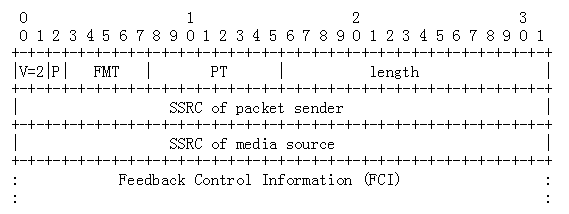

pgm不太能用，没有想象中的可靠，重传机制貌似仍然使用组播重传，丢包率80%的网络感觉没啥改进，如果有所好转延迟估计也是个不小的问题。
后听说rtp也有nack机制，webrtc基于rtp实现了重传在一定程度上保证可靠性。
在各路大神的指引下找到了rfc4585，看到了这么一段
RTCP扩展反馈报文，有一种nack报文

当FMT=1并且PT=205时，代表此报文是个NACK报文
| Name | Value | Brief Description |
|---|---|---|
| RTPFB | 205 | Transport layer FB message |
| PSFB | 206 | Pyload-specific FB message |
0: unassigned
1: Generic NACK
2-30: unassigned
31: reserved for future expansion of the identifier number spaceThe Generic NACK message is identified by PT=RTPFB and FMT=1.
FCI字段会有如下图所示的数据
PID：表示Packet ID，用于表明当前接收端丢失的数据包的序号，是接收端期待收到的下一个数据包
BLP：表示bitmask of following lost lost packets，占两个字节，16位，表示接着PID后面的16个数据包的丢包情况。
rtp协议本身不会帮你重传。应用应该自己解析rtcp做处理
我突然想起来，我入职的时候下过webrtc的源码，还没删除（可能是太大了，删太慢了就没删），于是就把源码拿出来看了看webrtc对于这个部分的实现
这个部分的代码量也不多，很好懂，大概就是发送端的rtcp receiver接收到rtcp数据包，解析发现是个nack，告诉rtp发送端重新发送接收端请求重传的数据包
bool RTCPReceiver::IncomingPacket(const uint8_t* packet, size_t packet_size) {
if (packet_size == 0) {
LOG(LS_WARNING) << "Incoming empty RTCP packet";
return false;
}
PacketInformation packet_information;
if (!ParseCompoundPacket(packet, packet + packet_size, &packet_information))
return false;
TriggerCallbacksFromRTCPPacket(packet_information);
return true;
}上述代码是rtcp receiver接收到rtcp数据包后的初步判断，ParseCompoundPacket函数用于解析rtcp数据包，将关键信息摘出储存到PacketInformation结构体中传递给触发回调，TriggerCallbacksFromRTCPPacket函数用于触发收到rtcp数据包回调。
下面是ParseCompoundPacket结构体的实现
struct RTCPReceiver::PacketInformation {
uint32_t packet_type_flags = 0; // RTCPPacketTypeFlags bit field.
uint32_t remote_ssrc = 0;
std::vector<uint16_t> nack_sequence_numbers;
ReportBlockList report_blocks;
int64_t rtt_ms = 0;
uint8_t sli_picture_id = 0;
uint64_t rpsi_picture_id = 0;
uint32_t receiver_estimated_max_bitrate_bps = 0;
std::unique_ptr<rtcp::TransportFeedback> transport_feedback;
};nack_sequence_numbers已经是解析过后的接收端没有收到的数据包的序号了，解析过程也很简单，是个拆包过的成就不再展开描述了。
void RTCPReceiver::TriggerCallbacksFromRTCPPacket(
const PacketInformation& packet_information) {
...
if (!receiver_only_ && (packet_information.packet_type_flags & kRtcpNack)) {
if (!packet_information.nack_sequence_numbers.empty()) {
LOG(LS_VERBOSE) << "Incoming NACK length: "
<< packet_information.nack_sequence_numbers.size();
_rtpRtcp.OnReceivedNack(packet_information.nack_sequence_numbers);
}
...
}TriggerCallbacksFromRTCPPacket函数会根据解析的数据包信息判断出当前rtcp数据包类型是nack，触发回调，该回调并不会直接到rtp sender而是到rtp-rtcp module由这个module调用rtp sender，这个module是rtp和rtcp的中心组件（和webrtc结构有关），也起到了解耦的作用
这个中间调用的代码量不多
void ModuleRtpRtcpImpl::OnReceivedNack(
const std::vector<uint16_t>& nack_sequence_numbers) {
for (uint16_t nack_sequence_number : nack_sequence_numbers) {
send_loss_stats_.AddLostPacket(nack_sequence_number);
}
if (!rtp_sender_.StorePackets() ||
nack_sequence_numbers.size() == 0) {
return;
}
// Use RTT from RtcpRttStats class if provided.
int64_t rtt = rtt_ms();
if (rtt == 0) {
rtcp_receiver_.RTT(rtcp_receiver_.RemoteSSRC(), NULL, &rtt, NULL, NULL);
}
rtp_sender_.OnReceivedNack(nack_sequence_numbers, rtt);
}一开始做了一些记录，记录丢包情况，然后rtt是用来做流控的，收到nack当次并不一定会重传，会用到rtt做判断。
下面是rtp sender的代码用于重传数据包
void RTPSender::OnReceivedNack(
const std::vector<uint16_t>& nack_sequence_numbers,
int64_t avg_rtt) {
TRACE_EVENT2(TRACE_DISABLED_BY_DEFAULT("webrtc_rtp"),
"RTPSender::OnReceivedNACK", "num_seqnum",
nack_sequence_numbers.size(), "avg_rtt", avg_rtt);
for (uint16_t seq_no : nack_sequence_numbers) {
const int32_t bytes_sent = ReSendPacket(seq_no, 5 + avg_rtt);
if (bytes_sent < 0) {
// Failed to send one Sequence number. Give up the rest in this nack.
LOG(LS_WARNING) << "Failed resending RTP packet " << seq_no
<< ", Discard rest of packets";
break;
}
}
}TRACE_EVENT是google调试使用的机制，不用管它，这个函数会循环重发丢失队列中的数据包，但是不一定发送成功，数据包缓存是有限制的，如果要重新发送的数据包已经不再缓存中了，总不能变出来吧？
int32_t RTPSender::ReSendPacket(uint16_t packet_id, int64_t min_resend_time) {
std::unique_ptr<RtpPacketToSend> packet =
packet_history_.GetPacketAndSetSendTime(packet_id, min_resend_time, true);
if (!packet) {
// Packet not found.
return 0;
}
// Check if we're overusing retransmission bitrate.
// TODO(sprang): Add histograms for nack success or failure reasons.
RTC_DCHECK(retransmission_rate_limiter_);
if (!retransmission_rate_limiter_->TryUseRate(packet->size()))
return -1;
if (paced_sender_) {
// Convert from TickTime to Clock since capture_time_ms is based on
// TickTime.
int64_t corrected_capture_tims_ms =
packet->capture_time_ms() + clock_delta_ms_;
paced_sender_->InsertPacket(RtpPacketSender::kNormalPriority,
packet->Ssrc(), packet->SequenceNumber(),
corrected_capture_tims_ms,
packet->payload_size(), true);
return packet->size();
}
bool rtx = (RtxStatus() & kRtxRetransmitted) > 0;
int32_t packet_size = static_cast<int32_t>(packet->size());
if (!PrepareAndSendPacket(std::move(packet), rtx, true,
PacketInfo::kNotAProbe))
return -1;
return packet_size;
}min_resend_time时间用于检测。如果之前有请求过重传同样序号的数据包，在短时间内是不会再重传的